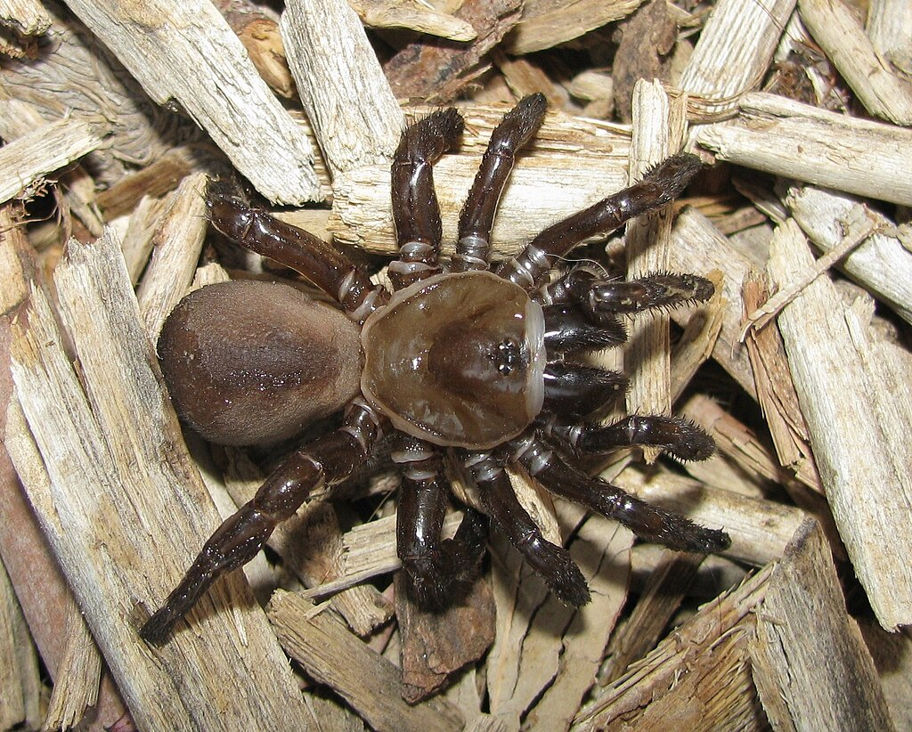
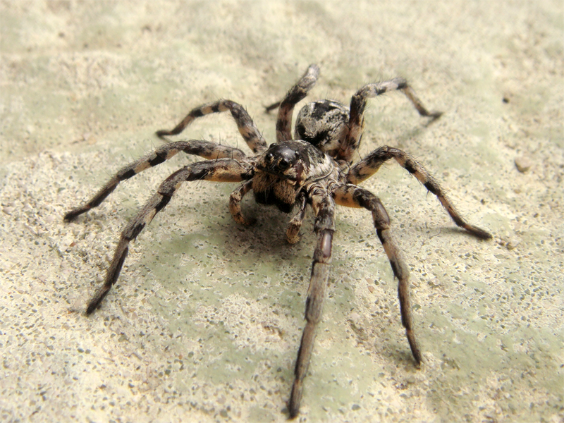

California Trapdoor Spider
Bothriocyrtum californicum
Bothriocyrtum californicum, the California trapdoor spider, is a species of spider in the family Halonoproctidae. It is found in the United States. Males are smaller than females. Predators include the spider wasp Psorthaspis planata, which use their bodies as larval nurseries, and skunks, which dig up their burrows.
Tarantula Wolf Spider
Lycosa Tarantula
These spiders are rather large, the females being as large as 30 mm (1+3⁄16 inches) in body length and the males around 19 mm (3⁄4 inch). As with other wolf spiders, the silken sac containing over 100 eggs is carried attached to the mother's spinnerets, and then after they hatch, the spiderlings climb on their mother's abdomen and ride around with her for some time until they are sufficiently mature to survive on their own.[3] After leaving their mother's protection, the young spiders disperse and dig burrows. Females live in their burrows all their lives except for nocturnal forays to capture prey, but the mature males leave the protection of burrows and wander about looking for mates. The males can live for 2 years. The females can live for 4 years or more. Many sexual encounters (about one-third according to one study) end in the females cannibalizing the male instead.[4] During the winter, these spiders hibernate in their burrows.
Sydney Funnel-Web Spider

Atrax Robustus
The Sydney funnel-web spider (Atrax robustus) is a species of venomous mygalomorph spider native to eastern Australia, usually found within a 100 km (62 mi) radius of Sydney. It is a member of a group of spiders known as Australian funnel-web spiders. Its bite is capable of causing serious illness or death in humans if left untreated. The Sydney funnel-web has a body length ranging from 1 to 5 cm (0.4 to 2 in). Both sexes are glossy and darkly coloured, ranging from blue-black, to black, to shades of brown or dark-plum coloured.